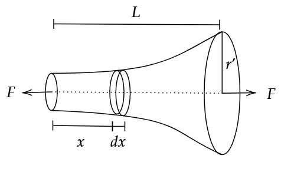

We know that,
\[\Delta L = \frac{FL}{AY}\]
Also, \[r = a^x\] can be written as \[r = e^{x \ln a}\tag1\]
Elongation in infitesimally small cross section \(dl\),
\[dl = \frac{Fdx}{\pi r^2 Y}\]
\[\Delta L = \frac{F}{\pi Y} \int_{1}^{r'} \frac{dx}{r^2}\]
Substituing (1) and corresponding change of limits,
\[\Delta L = \frac{F}{\pi Y} \int_{0}^{L} \frac{dx}{(e^{x \ln a})^2}\]
\[\Delta L = \frac{F}{\pi Y} \left( \frac{-1}{2 \ln a} e^{-2x \ln a} \right) \Biggr|_{0}^{L}\]
\[\therefore \Delta L = \frac{F}{2 \pi Y \ln a} \left( 1 - e^{-2L \ln a} \right)\]
It is interesting to note that if we let \(L \to \infty\), assuming force \(F\) on the other end can still be applied, we get that \(e^{-2L \ln a} \to 0\).
\[\implies \Delta L \Bigr|_{L = \infty} = \frac{F}{2 \pi Y \ln a}\]
So, for an infinitely large object, we can have finite elongation due to tensile forces. (Theoretically).
This is due to the fact that \(e^x\) rises rather rapidly. So, after some distance, we get that the cross sectional area \(A\) is much larger than the small \(dx\) at that point. And, as we know, \(\Delta L \propto \frac{dx}{A}\). Hence we get this finite elongation.